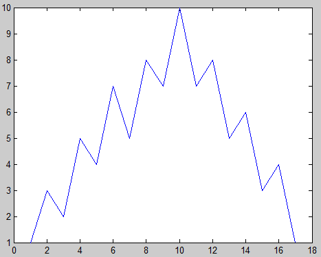
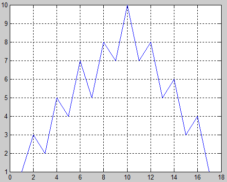

Tracer une courbe:
Sous MATLAB, rien de plus facile que de tracer une courbe correspondant à une suite de points :
y=[ 1 3 2 5 4 7 5 8 7 10 7 8 5 6 3 4 1];
plot(y);
Si aucune fenêtre graphique n'est déjà ouverte, la commande plot en ouvre une nouvelle et trace la courbe demandée. Si des fenêtres graphiques sont déjà ouvertes, la courbe est tracée dans la fenêtre courante.
- La courbe est constituée d'un trait plein rejoignant les points de la suite y.
- L'axe des x est gradué avec les numéros d'ordre des points tracés 1 2 3 4 5 6 7 8 . . .
- le graphique n'est pas quadrillé

La commande grid
Pour tracer le quadrillage du graphique :grid on;
La commande grid toute seule (sans le on) fonctionne comme un swich, si on l'exécute une deuxième fois, les grids disparaissent.
Couleur du trait
Pour tracer la courbe en rouge :plot(y,'r')
On peut utiliser les couleurs prédéfinies, ou un triplet [rouge vert bleu]
Pour voir toutes les possibilités, tapez :
help plot
Type de trait
essayer les commandes :plot(y,'o');
plot(y,'*');
plot(y,'--');
plot(y,':');
Tapez help plot pour voir tous les types de trait possibles.
on peut combiner couleur et type de trait :
plot(y,'g:')
Épaisseur de trait
Quand on trace une courbe, en plus de la couleur et du type de trait, on peut agir aussi sur son épaisseur. Pour cela, on dispose de deux façons :plot(x,y,'Linewidth',k);
k peut prendre des valeurs entières ou décimales pour indiquer l'épaisseur du trait. La valeur par défaut est 1. exemple :
plot(y,'Linewidth',2.5);
Une deuxième méthode consiste à attribuer un pointeur à une courbe au moment de son tracé. On peut par la suite modifier les propriétés de cette courbe à l'aide de la fonction set().
close all;
h1=plot(y,'r');
hold on;
z = 10-y;
h2=plot(z,'b');
set(h1,'LineWidth',2);
set(h2,'LineWidth',4);
set(h1,'linestyle','--','marker','diamond','MarkerSize',10);
Pour voir toutes les propriétés qu'on peut modifier:
set(h1)
Pour voir toutes les valeurs que peut prendre une propriété (marker par exemple):
set(h1,'marker')
On peut aussi utiliser la fonction get() pour voir quel est la valeur actuelle d'une propriété:
get(h2,'LineWidth')
L'axe des x
Pour qu'un graphique soit significatif, il faut que l'axe des x corresponde à quelque chose. Supposons que les valeurs de la suite y sont des mesures qui ont été relevées toutes les 5 secondes, la suite correspondant à l'axe des x sera :x = [0 5 10 15 20 25 30 35 40 45 50 55 60 65 70 75 80];
Maintenant on peut tracer la courbe y en fonction de x, ce qui provoque une graduation correcte de l'axe des x
plot(x,y,'m','linew',2);grid;
Vous avez remarqué qu'on peut abréger le nom des propriétés en utilisant linew à la place de linewidth
Il est évident que si la suite y était constituée d'un nombre de points plus important, on ne pourrait pas définir le vecteur x comme on l'a fait ci-dessus. La méthode la plus appropriée est l'utilisation de l'opérateur :
n = length(y);
x = 0 : 5 : (n-1)*5;
Modification des limites des axes
Ceci peut être réalisé à l'aide de la fonction axis()
close all;
plot(x,y,'m','linew',2);
axis([-10 100 -5 15]);
grid;
Contrôle de la graduation des axes
Quand on trace une courbe, le pas de graduation est défini automatiquement. On peut le modifier à l'aide de la fonction set() et des propriété xtick et ytick de l'axe courant. Pour déterminer quel est le pointeur de l'axe courant, on utilise la commande gca
close all
plot(x,y);
grid;
h = gca;
set(h,'xtick',0:5:100,'ytick',[1 2 3 8 9 10]);
La commande close
La commande close ferme la fenêtre graphique courante.La commande close(id) ferme la fenêtre graphique dont l'identificateur est id
La commande close all ferme toutes les fenêtres
La commande figure
Nous avons remarqué dans ce qui précède que, si une figure est présente à l'écran, le fait de tracer une nouvelle figure utilise la même fenêtre graphique, le nouveau tracé remplace l'ancien. Pour que le nouveau tracé soit réalisé à part, il faut ouvrir une nouvelle fenêtre à l'aide de la commande figurez = y/3;
close all;
plot(x,y);grid;
figure;
plot(x,z);grid;
La commande hold on
Si on désire tracer les deux courbes sur un même graphique :close all;
plot(x,y,'r');
hold on;
plot(x,z,'b');
grid;
Remarquons que dans ce cas simple, ce résultat peut être obtenu en utilisant la commande plot dans sa forme la plus générale;
plot(x,y,x,z); grid;
ou encore
plot(x,y,'r',x,z,'b'); grid;
ou encore
plot(x,y,'r',x+100,z,'b'); grid;
Annotation d'un graphique
Les foncions xlabel, ylabel et title permettent d'annoter respectivement l'axe horizontal, l'axe vertical et la figure elle-même. La commande text(x,y,'texte') permet placer un texte à la position x,y. La commande gtext('texte') permet de placer un texte à l'aide de la sourisplot(x,y); grid;
xlabel('Temps en seconde');
ylabel('grandeur mesurée');
title('TITRE DU GRAPHIQUE');
text(55,8.5,'texte libre');
text(10,7,'texte incliné','rotation',45);
gtext('texte placé par la souris');
Lire la position de la souris
La fonction ginput permet de digitaliser la figure courante, c'est à dire de mémoriser les positions cliquées par la souris.plot(x,y);grid;
[X,Y]=ginput(1)
cliquez quelque par sur la figure pour obtenir les coordonnés du point pointé
X = 40
Y = 4
B=ginput(4)
Cliquer sur 4 points quelconques pour obtenir leurs coordonnés, exemple :
B =
20.0000 1.9849
30.0000 2.9698
40.2326 2.9698
50.0000 3.9547
[U,V]=ginput(4)
Cliquer 4 fois
U =
34.1860
46.0465
57.6744
27.6744
V =
4.6340
5.8906
7.4189
8.7094
Si on ne précise pas de paramètre pour la fonction ginput, il faut arrêter la saisie par la touche ENTER ↵
>> B=ginput
Cliquez le nombre de fois que vous voulez puis taper ↵
LA HIERARCHIE DES OBJETS GRAPHIQUES
Les objets graphiques sous MATLAB sont organisés selon la hiérarchie suivante :
L'objet root
L'objet root ne peut être ni crée ni supprimé par l'utilisateur. Il est crée automatiquement lors du lancement de MATLAB . Son pointeur est toujours 0.En général il correspond à l'écran.get(0,'ScreenSize') --> dimensions de l'écran
get(0) --> toutes les propriétés actuelles de l'écran
set(0) --> toutes les propriétés que l'on peut modifier à l'aide de la fonction set()
L'objet figure
l'objet figure est créé à l'aide de la commande figurefigure
fig1 = figure
fig2 = figure('position',[1 1 400 300]);
set(fig1,'color','m','menubar','none');
figure(fig2) --> la figure dont le pointeur est fig2 devient la figure courante
Le tableau ci-dessous illustres quelques propriétés de l'objet figure. Pour voir toutes les propriétés possibles d'une figure, utiliser la commande set :
>> set(fig1)
>> set(gcf)
gcf correspond au pointeur de la figure courante
| Propriété | Description |
| Position | Position et taille de la figure :[Xmin Ymin Largeur Hauteur] |
| Units | Unités utilisées pour interpréter le paramètre position : inches, centimetres, normalized, points, {pixels}, characters |
| Color | Couleur de l'arrière plan, peut être soit une couleur prédéfinie 'r', 'yellow' ? ou un triplet [R G B] |
| MenuBar | Pour afficher ou non la barre des menus : none, {figure} |
| Name | Titre de la fenêtre graphique |
| NumberTitle | Affiche ou non le numéro de la figure : {on}, off |
| Resize | Pour préciser si la fenêtre peut être redimensionnée à l'aide de la souris : off, {on} |
| Visible | Fenêtre Visible ou non : {on}, off |
| CurrentAxes | Pour définir un axe comme l'axe courant |
| CurrentObject | Pour définir un objet comme l'objet courant |
L'objet axe
Un objet axe est crée à l'aide la fonction axes(). Si on trace un objet graphique (une ligne par exemple) avant de créer un axe, alors celui ci est crée automatiquement vu qu'une ligne ne peut exister sans l'objet père qui est l'axe.ax1 = axes('position',[0.1 0.1 0.4 0.4])
la lige ci-dessus crée un axe dans la fenêtre courante avec la position et la taille spécifiée par la propriété position et lui affecte l'identificateur ax1. S'il n'y a pas de fenêtre ouverte, une nouvelle fenêtre est crée car un axe ne peut pas exister tout seul.
ax2=axes('parent',fig2,'position',[0.5 0.5 0.4 0.4])
crée un axe dans la fenêtre fig2 avec la position et la taille spécifiée par la propriété position et lui affecte l'identificateur ax2
Les fonctions comme plot(), grid(), semilogx() ... tracent toujours dans l'axe courant désigné par gca.
Pour tracer dans un axe donné, on dispose de deux façons:
- Désigner cette axe comme l'axe courant et travailler normalement
axes(ax2);
plot(x,y);
grid;
... - Pour chaque fonction, préciser l'axe dans lequel on désire tracer:
plot(ax2,x,y);
semilogx(ax2, x, y);
grid(ax2);
| Propriété | Description |
| Box | trace ou non un carré autour des axes : on ,{off} |
| Color | couleur de l'arrière plan |
| Children | Liste des pointeur des objet appartenant à cet axe |
| FontAngle | Inclinaison des caractères : {normal}, italic, oblique |
| FontName | Fonte des graduations et du titre des axes : arial ? |
| FontSize | Taille du texte des graduations et des titres des axes :{10} |
| FontUnits | Unité de FontSize : {points}, normalized, centimeters, pixels |
| FontWeight | Normal ou gras : {normal}, bold, light, demi |
| GridLineStyle | style de trait des graduation : -, --, {:}, -., none |
| LineWidth | épaisseur de trait pour les axes en point {0.5} |
| NextPlot | Tracé suivant : {replace}, add, replacechildren on peut aussi utiliser les fonctions hold on, hold off |
| Parent | pour préciser dans quel fenêtre l'axe doit être crée |
| Position | Position des axes : [Xmin Ymin Largeur Hauteur] |
| Title | Définit le titre à l'aide d'un pointeur pointant sur un texte. On peut aussi utiliser la fonction title |
| Units | Les unités de la propriété position |
| Visible | axex visibles ou non : {on}, off |
| XGrid, YGrid, ZGrid | Affiche ou non les graduations pour chaque axe : on, {off} |
| XLabel, YLabel, ZLabel | Définit les titres des axes. Leurs valeurs doivent être des identificateurs de texte. On peut aussi utiliser les fonctions xlabel, ylabel et zlabel |
| XTickLabel, YTickLabel, ZTickLabel | définit les textes des graduations des axes |
| XAxisLocation | Position de l'axe des x : {botom}, top |
| YAxisLocation | Position de l'axe des y : {left}, right |
| XLim, YLim, ZLim | Limites des axes : [min max] On peut aussi utiliser la fonction axis() |
| XTick, YTick, ZTick | Position des graduations |
| XColor, YColor, ZColor | couleur des axes et des graduations |
Remarque:
Quand un axe est en mode hold off, ('NextPlot'=replace), un nouveau tracé avec une fonction de haut niveau comme la fonction plot supprime tous les objets appartenant à l'axe (lignes, textes, titre)
La fonction subplot()
La fonction subplot() permet de créer et de contrôler des graphiques à axes multiples.subplot(n,m,k) : Partage la figure courante en n x m rectangle ( n lignes et m colonnes) et crée un (sous)axe à la position k, cet axe devient l'axe courant.
Id = subplot(n,m,k) : Crée un sous axe et affecte son identificateur à la variable id.
subplot(id) : L'axe d'identificateur id devient l'axe courant
Exemple :
x=sin(t);
y=sin(2*t);
close all;
f1=figure('NumberTitle','off','name','Illustration de la commande SUBPLOT');
a1=subplot(2,2,1);
plot(t,x);grid;
text(3,0.2,'\leftarrow sin(x)');
title('subplot(2,2,1)');
a2=subplot(2,2,2);
plot(t,y);grid;
title('subplot(2,2,2)');
a3=subplot(2,2,3);
plot(x,y);
title('subplot(2,2,3)');
a4=subplot(2,2,4);
plot(y,x);
title('subplot(2,2,4)');
set(a1,'color','c');
set(a3,'xgrid','on');
set(a4,'ygrid','on');

L'objet Ligne
Les lignes sont les objets graphiques de base. Elles appartiennent à un système d'axe et peuvent être crées par les fonctions plot(), line(), plot3() et d'autres fonctions.x = 0:0.1:6;
y = sin(x);
l1 = plot(x,y,'linewidth',2);
set(l1,'marker','d');
Pour déterminer tous les attributs possibles de la ligne l1:
set(l1)
Pour consulter les valeurs possibles d'un attribut (LineStyle par exemple):
set(l1,'LineStyle')
Voici quelques attributs courants:
| Propriété | Description |
| Color | Couleur de la ligne |
| EraseMode | Permet de contrôler la façon dont Matlab trace ou efface les objets. Peut prendre les valeurs {normal} | background | xor | none. Avec xor, si on trace un objet sur lui, même, il est efacé |
| LineStyle |
Type de trait: {-} | -- | : | -. | none |
| LineWidth |
Epaisseur de trait. {0.5 points} |
| Marker | marqueurs des points constituant une ligne les valeurs possibles sont: + | o | * | . | x | square | diamond | v | ^ | > | < | pentagram | hexagram | {none} |
| MarkerEdgeColor | Couleur du bord du marqueur |
| MarkerFaceColor | Couleur de fond du marquer |
| MarkerSize | Taille du marquer {6 points} |
| Parent | identificateur de l'objet axe qui va recevoir la ligne. Par défaut, c'est l'axe courant |
| Visible | visible ou non {on}, off |
L'objet Text
Les objets text sont des chaînes de caractère. Ils appartiennent à un système d'axes et sont positionnés selon son système de coordonnées. Les fonctions text(), title(), xlabel(), ylabel(), zlabel() et gtext() permettent de créer des objets text.id = text(x,y,'chaine de caractère', 'propriété',valeur_propriété ... );
- x,y représentent la position ou sera placé le texte
- 'chaine de caractère' peut être n'importe quelle chaîne. Pour les caractères particuliers, utiliser le tableau des caractères spéciaux.
- Pour les priorités voir tableau des propriétés
| Propriété | Description |
| Color | Couleur du texte |
| FontAngle | Inclinaison des caractères : {normal}, italic |
| Fontname | Nom de la fonte à utiliser |
| FontSize | taille des caractères en fontUnits |
| FontUnits | Unité de fontsize : {points}, normalized, inches, centimetres, pixels |
| FontWeight | Normal ou gras : light, {normal}, demi, bold |
| HorizontalAlignment | Justification horizontale : {left}, center,right |
| Parent | Identificateur de l'axe père |
| Rotation | Orientation du texte en degré |
| Units | Unités de position : pixels, normalized, inches, centimeters, points, {data} |
| VerticalAlignment | Justification verticale : top, cap, {middle}, baseline, botom |
| Visible | Visible ou non : {on}, off |
Quelques Exemples:
Exemple 1:
| sz=get(0,'screensize'); L=sz(3); H=sz(4); close all; fig1=figure('position',[10 H/2 0.45*L 0.4*H],'color',[0.5 0.5 0]); ax1 = axes('parent',fig1,'position',[0.5 0.55 0.45 0.35],... 'color','y','xcolor','w','ycolor','m','nextplot','add'); title('tracé 1','color','w'); fig2=figure('position',[L/2 H/2 0.45*L 0.45*H],'color','m'); set(fig2,'numbertitle','off','menubar','none','name','GRAPHIQUE 2'); ax2=axes('parent',fig2,'position',[0.1 0.57 0.45 0.3],'color','c','nextplot','add'); title('tracé 2'); ax3 = axes('parent',fig2,'position',[0.1 0.1 0.8 0.3],'nextplot','add'); title('tracé 3'); x=0:0.1:6; y1=sin(x); y2=1.5*sin(2*x); l1=plot(x,y1); % sera ajouté à l'axe courant ( = ax3) l2=plot(x,y2,'r'); % sera ajouté à l'axe courant ( = ax3) l3 = plot(x,y2,'Parent',ax1,'LineWidth',2); %sera ajouté à l'axe ax1 l4 = plot(x,y2,'r','Parent',ax2); %sera ajouté à l'axe ax2 |
- Placez ce script dans votre dossier de travail matlab
- Exécutez le en tapant son nom dans la fenêtre shell matlab
- Tout en observant les deux figures, tapez: set(ax3,'parent',fig1)
- Amusez vous à faire des choses du même genre,
Exemple 2:
| x = -pi:pi/100:pi; y1 = sin(1.5*x); y2 = 0.4*cos(10*x); y3 = y1 + y2; close all; plot(x,y1,':r',x,y2,'--m'); hold on; plot(x,y3,'b','linewidth',2); axis([-pi pi -1.5 1.5]); grid; t = -pi:pi/50:pi; s1 = sin(5*t); s2 = 1 + 0.8*sin(t); s3 = s1 .* s2; pf1 = get(gcf,'position'); figure('position',[pf1(1)+100 pf1(2)-100 pf1(3) pf1(4)]); plot(t,s3,':ro','linewidth',2,'MarkerEdgeColor','b',... 'MarkerFaceColor','y','MarkerSize',10); hold on; plot(t,s2,'--k',t,-s2,'--k'); axis([-pi pi -2 2]); set(gca,'xtick',-pi:pi/4:pi); set(gca,'xticklabels',... [' -p ';'-3p/4';' p/2 ';'-p/4 ';' 0 ';' p/4 ';' p/2 ';' 3p/4';' p ']); set(gca,'fontname','symbol'); grid; |
Ce scripte permet d'illustrer les points suivants :
-
Comment générer un signal en commençant d'abord par créer un vecteur x, puis d'exprimer une fonction désirée aux différents points du vecteur x,
-
Comment tracer plusieurs courbes sur une fenêtre graphique soit en utilisant plusieurs paire x,y dans la fonction plot() soit en utilisant la commande hold on,
-
Comment préciser le style de trait, sa couleur ainsi que son épaisseur,
-
Comment définir les limites des axes à l'aide de la fonction axis(),
-
Comment ouvrir une nouvelle fenêtre graphique pour un nouveau tracé à l'aide la fonction figure(),
-
Comment tracer une courbe en combinant un style de trait, le type de marqueur, l'épaisseur des traits pleins, la taille des marqueurs ainsi que la couleur de leur contour et leur intérieur,
-
Comment préciser l'emplacement des graduation des axes en utilisant la propriété xtick ou ytick de l'axe (gca signifie axe courant).
-
Comment changer l'annotation des graduations à l'aide la propriété xticklabel ou yticklabel associée avec la propriété fontname,
Les valeurs par défaut des propriétés graphiques
A la création d'un objet graphique, MATLAB affecte des valeurs par défaut pour toutes les propriétés non précisées.- Pour obtenir une liste de toute les valeurs par défauts (factory-defined values), taper la commande suivante dans la fenêtre de commande Matlab
- Pour voir les valeurs par défaut des propriétés d'un objet donné avec une commande de la forme get(0,'FactoryObjectType'), La commande ci-dessous permet de consulter toutes propriétés par défaut de l'objet Text :
- Pour avoir la valeur par défaut d'une propriété donnée, on utilise une commande de la forme get(0,'FactoryObjectTypePropertyName'), exemple :
- Pour modifier la valeur par défaut d'une propriété, on utilise une commande de la forme set(0,'DefaultObjectTypePropertyName'). Par exemple:
set(0,'DefaultaxesYGrid','on','DefaultaxesXGrid','on');
Pour spécifier une épaisseur de trait de 1.5 point
set(0,'DefaultLineLineWidth',1.5)
On peut spécifier les propriétés par défaut à partir d'un niveau hiérarchique donné. Si on spécifie des propriétés par défaut au niveau d'une figure existante, tous les objets affiliés à cette figure hériteront de ces propriétés. Par contre, si une autre figure est créée, elle ne sera pas concernée par ces définitions et ira chercher ses valeurs par défaut au niveau root = 0.
- Pour spécifier une épaisseur de trait de 3 points pour toutes les lignes qui seront tracées dans la figure courante : set(gcf,'DefaultLineLineWidth',3)
- Pour voir toutes les propriété par défaut redéfinies au niveau d'un objet, gcf par exemple get(gcf,'default')
- Pour annuler une spécification par défaut, on utilise la valeur 'remove' set(gcf,'DefaultLineLineWidth','remove')
Recopier un objet d'un parent à l'autre
On peur recopier un objet d'un parent vers un autre en utilisant la commande copyobj. Le nouvel objet diffère du premier seulement par son pointeur et sa propriété parent. Quand on copie un objet qui a des descendants, ceux-ci sont copiés avec lui.
Copier/Coller ce scripte dans la fenêtre de commande Matlab:
y1=sin(x);
y2=0.5*cos(2*x);
close all;
f1=figure;
a1=subplot(2,2,1);
l1=plot(x,y1);
a2=subplot(2,2,2);
l2=plot(x,y2);
f2=figure;
a3=axes('position',[0.06 0.1 0.9 0.6]);
l3=plot(x,y1,x,y2);
Tapez les commandes suivantes tout en observant la figure f2
a4 = copyobj(a1,f2);
a5 = copyobj(a2,f2);
Pour accéder à un axes pour tracer de nouvelle ligne par exemple, il suffit d'utiliser la commande axes. Essayer les commandes suivantes en observant la figure.
axes(a3);
axes(a4);
axes(a5);
garder la figure f2 à l'écran pour illustrer le paragraphe suivant
Comment détruire un objet
Pour détruire un objet, on utilise la fonction delete(identificateur)
Tout en observant la figure f2 du paragraphe précédent, taper les commandes suivantes :
delete(a5);
delete(l3(2));
Remarquez que l'identificateur l3 est en réalité un vecteur de deux éléments, l3(1) et l3(2) car la commande l3=plot(x,y1,x,y2); trace deux courbes